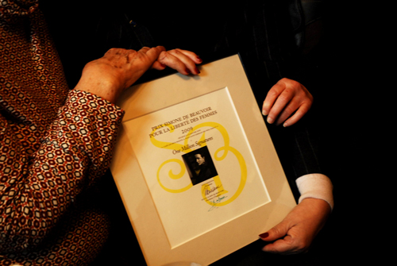
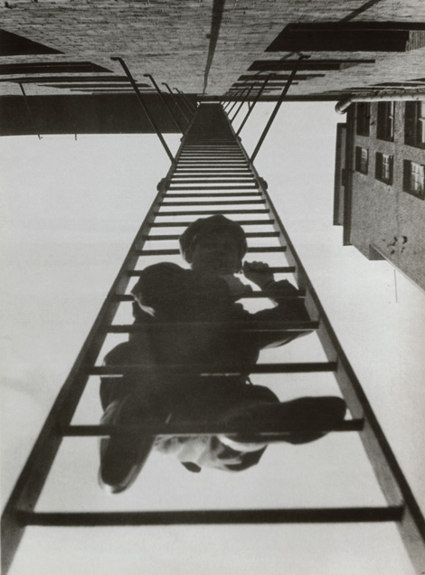
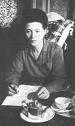
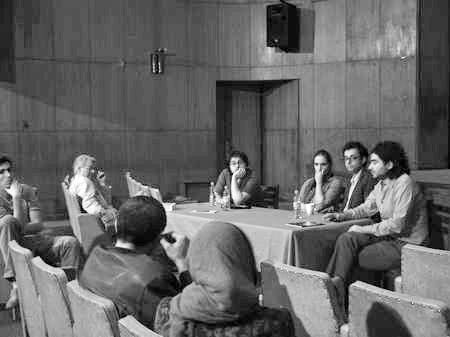
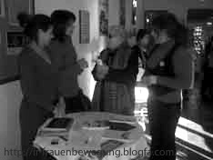

مقالههاى اين بخش
- 10 بهمن 1387
زنان در جامعه نابرابر
کانون زنان ایرانی / فریده غایب
- 9 بهمن 1387

مصاحبه با وکيل معصومه
روزآنلاین/سارا مقدم
- 9 بهمن 1387

زنان و قوانین تبعیض آمیز
شهلا باورصاد
- 9 بهمن 1387
نایبرئیس کمیسیون قضایی مجلس:
- 7 بهمن 1387
گفت وگو با شهلا شفیق
دویچه وله /نادیه فضل
- 7 بهمن 1387
منطقه
دویچه وله
- 5 بهمن 1387

گفت و گو با ثريا خالدي ، تنها سردفتر زن در چهارمحال و بختیاری
کانون زنان ایرانی / ترانه بني يعقوب
- 5 بهمن 1387
بازتاب
کمپین یک میلیون امضا در کرمان/ ا-خ-باد
- 4 بهمن 1387

کمپین و جایزه سیمون دوبوآر
کمپین یک میلیون امضا در اصفهان / مهرنوش اعتمادی
- 4 بهمن 1387

کولايي:
بامداد خبر
- 3 بهمن 1387

سومین نشست دانشجویان محروم از تحصیل
خبرنامه امیرکبیر
- 2 بهمن 1387

گفت و گو با شیرین عبادی و دکتر ابراهیم یزدی
رادیو زمانه / مریم محمدی
- 2 بهمن 1387
گفت و گو با شهلا شفیق از فعالان حقوق زنان در پاریس
رادیو زمانه / پژمان اکبرزاده
- 1 بهمن 1387
30 درصد از سقطهاي غيرقانوني به فوت مادر منجر ميشوند
خبرگزاري کار ايران
- 30 دی 1387

برای فرشته کشتی غرق شده گذشته ام نگرانم
آزاده پورزند
- 29 دی 1387

گفت و گو با الهه موالی زاده
کانون زنان ایرانی / فریده غایب
- 28 دی 1387
شیرین عبادی :
رادیو فرانسه /لیدا پرچمی
- 27 دی 1387
کار مساوی، دست مزد مساوی
اخبار روز / برگردان: لاله حسین پور
- 26 دی 1387

گفت و گو با مهدی حجتی، وکیل مدافع زینب بایزیدی
رادیو زمانه / اردوان روزبه
- 26 دی 1387

به مناسبت تولد یکصد ویک سالگی سیمون دوبوار
کانون زنان ایرانی / فریده غایب
- 25 دی 1387

زنان و جامعه
سرمایه / شکوفه آذر
- 24 دی 1387

مصائب انديشه و آزادي
روزآنلاین / مرتضي سيمياري
- 24 دی 1387
ازدواج در قوانین
دفاع از بی دفاع / محمد مصطفایی
- 23 دی 1387

کمپین یک میلیون امضا از شهر دوسلدورف
کمپین دوسلدورف /مریم خدارحمی/ مرضیه بخشی زاده
- 23 دی 1387

گزارشی از حمله لباس شخصی ها به صلح طلبان ایرانی
کانون زنان ایرانی/بهمن احمدی امویی،عکس مریم مجد
- 22 دی 1387

سوسن طهماسبي در مصاحبه با روز:
روزآنلاین/سارا مقدم
- 22 دی 1387
خشونت علیه زنان
کمپین رشت / سعیده یوسفی
- 21 دی 1387
عبدالکريم لاهيجي در مصاحبه با روز
روزآنلاین / امید معماریان
- 20 دی 1387
افتخاری دیگر برای کمپین
دویچه وله / میترا شجاعی
- 20 دی 1387
بازتاب
روزآنلاین / سامان آقایی
| ... | | | | | 1320 | | | | | ... |